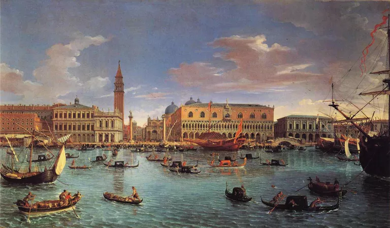
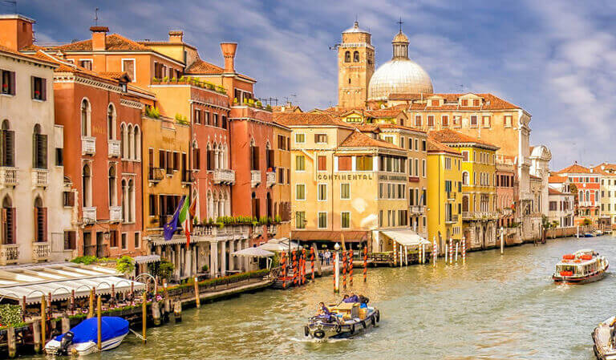

HISTORY VENICE

Updated February 01, 2020
Venice is a city in Italy, best known today for the many waterways which criss-cross through it. It has
developed a romantic reputation built upon by countless movies, and thanks to one startling horror film has
also evolved a darker atmosphere. The city has a history dating from the sixth century, and once wasn't just
a city in a larger state: Venice was once one of the greatest trading powers in European history. Venice was
the European end of the Silk Road trade route which moved goods all the way from China, and consequently was
a cosmopolitan city, a true melting pot.Venice developed a creation myth that it was founded by people
fleeing Troy.

January 19, 2020
Just as with Florence, Venice was a Republic during the Renaissance. Actually, Venice was an empire that
controlled land in what is modern day Italy, a whole lot of sea coast down the Adriatic and countless
islands. It enjoyed a stable political climate and thriving trade economy, both of which survived outbreaks
of the Black Death and the fall of Constantinople (a major trading partner). Venice was, in fact, so
prosperous and healthy that it took someone named Napoleon to undo its empire status... but, that was quite
a while after the Renaissance had faded away and had nothing to do with art.